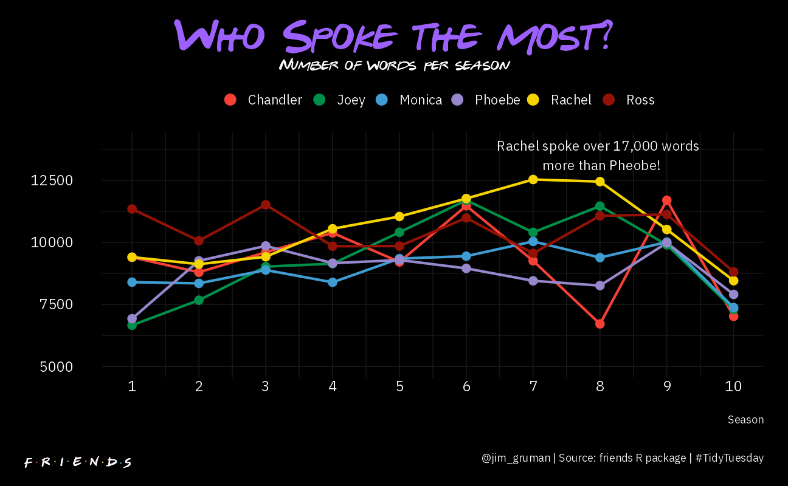
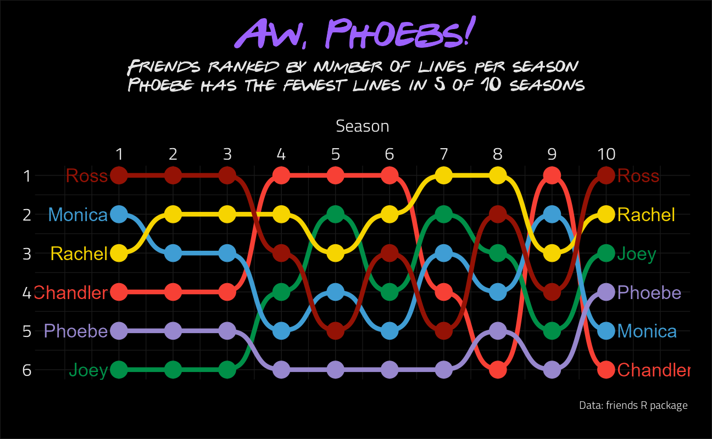
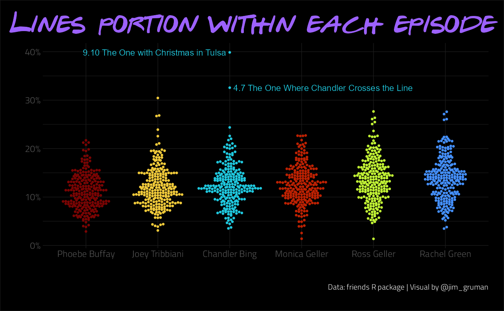
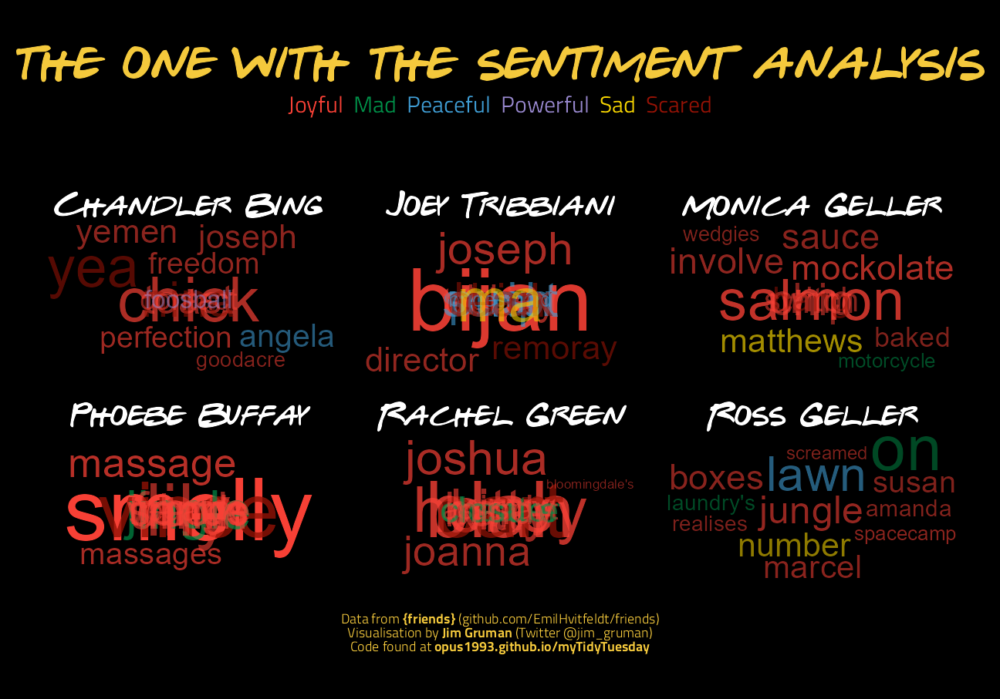

Last updated: 2021-09-17
Checks: 7 0
Knit directory: myTidyTuesday/
This reproducible R Markdown analysis was created with workflowr (version 1.6.2). The Checks tab describes the reproducibility checks that were applied when the results were created. The Past versions tab lists the development history.
Great! Since the R Markdown file has been committed to the Git repository, you know the exact version of the code that produced these results.
Great job! The global environment was empty. Objects defined in the global environment can affect the analysis in your R Markdown file in unknown ways. For reproduciblity it’s best to always run the code in an empty environment.
The command set.seed(20210907) was run prior to running the code in the R Markdown file. Setting a seed ensures that any results that rely on randomness, e.g. subsampling or permutations, are reproducible.
Great job! Recording the operating system, R version, and package versions is critical for reproducibility.
Nice! There were no cached chunks for this analysis, so you can be confident that you successfully produced the results during this run.
Great job! Using relative paths to the files within your workflowr project makes it easier to run your code on other machines.
Great! You are using Git for version control. Tracking code development and connecting the code version to the results is critical for reproducibility.
The results in this page were generated with repository version 6365794. See the Past versions tab to see a history of the changes made to the R Markdown and HTML files.
Note that you need to be careful to ensure that all relevant files for the analysis have been committed to Git prior to generating the results (you can use wflow_publish or wflow_git_commit). workflowr only checks the R Markdown file, but you know if there are other scripts or data files that it depends on. Below is the status of the Git repository when the results were generated:
Ignored files:
Ignored: .Rhistory
Ignored: .Rproj.user/
Ignored: analysis/figure/
Ignored: catboost_info/
Ignored: data/2021-09-08/
Ignored: data/acs_poverty.rds
Ignored: data/fmhpi.rds
Ignored: data/grainstocks.rds
Ignored: data/hike_data.rds
Ignored: data/us_states.rds
Ignored: data/us_states_hexgrid.geojson
Ignored: data/weatherstats_toronto_daily.csv
Untracked files:
Untracked: code/work list batch targets.R
Untracked: figure/
Unstaged changes:
Modified: code/_common.R
Note that any generated files, e.g. HTML, png, CSS, etc., are not included in this status report because it is ok for generated content to have uncommitted changes.
These are the previous versions of the repository in which changes were made to the R Markdown (analysis/Friends.Rmd) and HTML (docs/Friends.html) files. If you’ve configured a remote Git repository (see ?wflow_git_remote), click on the hyperlinks in the table below to view the files as they were in that past version.
| File | Version | Author | Date | Message |
|---|---|---|---|---|
| Rmd | 6365794 | opus1993 | 2021-09-17 | Annotate the Lines portion dot plot |
The data this week comes from the friends R package for the Friends transcripts and information on the episodes themselves, like when the characters interact with one another.
There’s text, appearance, ratings, and many other datasets here. We will check out the tidytext mining package and the newly released Supervised Machine Learning for Text Analysis in R book, both which are freely available online.
Download the weekly data and make available in the tt object.
tt <- tidytuesdayR::tt_load("2020-09-08")
Downloading file 1 of 3: `friends.csv`
Downloading file 2 of 3: `friends_info.csv`
Downloading file 3 of 3: `friends_emotions.csv`friends_text <- tt$friends %>%
inner_join(tt$friends_info, by = c("season", "episode")) %>%
mutate(
episode_title = glue("{ season }.{ episode } {title}"),
episode_title = fct_reorder(episode_title, season + .001 * episode),
text = parse_character(text)
)
epi.info <- tt$friends_info
emotion <- tt$friends_emotions
main_characters <- friends_text %>%
count(speaker, sort = TRUE) %>%
head(6) %>%
select(speaker) %>%
separate(speaker, into = c("firstname", "lastname"), remove = FALSE)
main_characters %>%
pull(speaker)[1] "Rachel Green" "Ross Geller" "Chandler Bing" "Monica Geller"
[5] "Joey Tribbiani" "Phoebe Buffay" With inspiration from Dr. Christian Hoggard @CSHoggard
friends_parsed <- friends_text %>%
filter(speaker %in% main_characters$speaker) %>%
mutate(
word_count = str_count(text, "\\w+"),
speaker = word(speaker)
) %>%
select(-utterance, -scene) %>%
group_by(speaker, season) %>%
summarise(
word_sum = sum(word_count),
.groups = "drop"
)
friends_parsed %>%
group_by(speaker) %>%
summarise(
total_sum = sum(word_sum),
.groups = "drop"
) %>%
knitr::kable()| speaker | total_sum |
|---|---|
| Chandler | 93526 |
| Joey | 93642 |
| Monica | 89597 |
| Phoebe | 88011 |
| Rachel | 105237 |
| Ross | 104144 |
img_friends <- "https://turbologo.com/articles/wp-content/uploads/2019/12/friends-logo-cover-678x381.png."p <-
ggplot(friends_parsed, aes(season, word_sum, color = speaker)) +
geom_line(size = 1) +
geom_point(size = 3) +
lims(y = c(5000, 14000)) +
scale_x_continuous(n.breaks = 10) +
scale_colour_manual(values = friends_pal) +
labs(
title = "Who Spoke the Most?",
subtitle = "Number of words per season",
caption = "@jim_gruman | Source: friends R package | #TidyTuesday",
x = "Season",
y = NULL
) +
annotate(
"text",
x = 8,
y = 13500,
size = 4,
color = "grey97",
family = "IBM Plex Sans",
label = "Rachel spoke over 17,000 words \n more than Pheobe!"
) +
guides(colour = guide_legend(
nrow = 1,
override.aes = list(linetype = 0, size = 4)
)) +
theme(
legend.position = "top",
legend.title = element_blank(),
legend.text = element_text(
color = "grey97",
size = 11,
family = "IBM Plex Sans"
),
plot.margin = margin(20, 20, 20, 20),
plot.background = element_rect(fill = "#000000"),
panel.grid.major = element_line(
size = 0.35,
linetype = "solid",
colour = "grey10"
),
panel.grid.minor = element_line(
size = 0.3,
linetype = "solid",
colour = "grey10"
),
axis.text.x = element_text(
color = "grey97",
family = "IBM Plex Sans"
),
axis.title.x = element_text(
color = "grey97",
margin = margin(20, 0, 5, 0),
family = "IBM Plex Sans"
),
axis.text.y = element_text(
color = "grey97",
margin = margin(0, 20, 0, 5),
family = "IBM Plex Sans"
),
axis.title.y = element_text(
color = "grey97",
family = "IBM Plex Sans"
),
plot.title = element_text(
color = "#9C61FD",
size = 32,
hjust = 0.5,
margin = margin(0, 0, 10, 0),
family = "Gabriel Weiss' Friends Font",
face = "plain"
),
plot.subtitle = element_text(
color = "grey97",
size = 12,
hjust = 0.5,
margin = margin(0, 0, 10, 0),
family = "Gabriel Weiss' Friends Font",
face = "plain"
),
plot.caption = element_text(
size = 9,
colour = "grey97",
margin = margin(20, 0, 0, 0),
family = "IBM Plex Sans"
)
)
cowplot::ggdraw() +
cowplot::draw_plot(p) +
cowplot::draw_image(img_friends, scale = 0.2, y = -0.45, x = -0.4)
From David Smale @committedtotape
tweetrmd::include_tweet("https://twitter.com/committedtotape/status/1303805992304627713")Using this week's #TidyTuesday on 'Friends' to try out the #ggbump üì¶ by @davsjob for the first time. It was fun, good to be back on the Tidy Tuesday üöÇ #rstats pic.twitter.com/vQekflc2Qj
— David Smale üîé (@committedtotape) September 9, 2020
lines_by_season <- friends_text %>%
filter(speaker %in% main_characters$speaker) %>%
count(season, speaker, name = "lines") %>%
group_by(season) %>%
arrange(season, -lines) %>%
mutate(rank = row_number()) %>%
inner_join(main_characters, by = "speaker")
lines_by_season %>%
ggplot(aes(season, rank, color = firstname)) +
geom_point(size = 7) +
geom_text(
data = lines_by_season %>% filter(season == 1),
aes(x = season - .2, label = firstname),
size = 6,
hjust = 1
) +
geom_text(
data = lines_by_season %>% filter(season == 10),
aes(x = season + .2, label = firstname),
size = 6,
hjust = 0
) +
geom_bump(size = 2, smooth = 5) +
scale_x_continuous(
limits = c(0, 11),
breaks = seq(1, 10, 1),
position = "top"
) +
scale_y_reverse(
breaks = seq(1, 6, 1),
position = "left"
) +
scale_color_manual(values = friends_pal) +
labs(
title = "Aw, Phoebs!",
subtitle = "Friends ranked by number of lines per season \nPhoebe has the fewest lines in 5 of 10 seasons",
caption = "Data: friends R package ",
x = "Season",
y = NULL
) +
theme(
legend.position = "none",
plot.background = element_rect(fill = "#000000", color = "gray10"),
axis.text.x = element_text(color = "gray90", size = 16),
axis.text.y = element_text(color = "gray90", size = 16),
axis.title.x.top = element_text(
color = "gray90",
size = 16,
hjust = 0.5,
margin = margin(0, 0, 10, 0)
),
axis.title.y.left = element_text(
color = "gray90",
size = 16,
hjust = 0,
vjust = 0.5,
angle = 0
),
plot.title = element_text(
color = "#9C61FD",
hjust = 0.5,
size = 34,
margin = margin(0, 0, 10, 0),
family = "Gabriel Weiss' Friends Font",
face = "plain"
),
plot.subtitle = element_text(
color = "gray90",
hjust = 0.5,
size = 16,
margin = margin(0, 0, 20, 0),
family = "Gabriel Weiss' Friends Font",
face = "plain"
),
plot.caption = element_text(
color = "gray90",
hjust = 1,
size = 10,
margin = margin(20, 0, 5, 0)
),
plot.margin = margin(20, 20, 20, 20),
panel.grid.major = element_line(
size = 0.35,
linetype = "solid",
colour = "grey10"
),
panel.grid.minor = element_line(
size = 0.3,
linetype = "solid",
colour = "grey10"
)
)
Let’s model features with regression to infer what features drive imdb_rating
speaker_lines_per_episode <- friends_text %>%
count(speaker, episode_title, imdb_rating) %>%
complete(speaker, episode_title, fill = list(n = 0)) %>%
group_by(episode_title) %>%
fill(imdb_rating, .direction = "downup") %>%
ungroup() %>%
add_count(episode_title, wt = n, name = "episode_total") %>%
mutate(pct = n / episode_total)
speaker_lines_per_episode %>%
semi_join(main_characters, by = "speaker") %>%
mutate(speaker = fct_reorder(speaker, n)) %>%
ggplot(aes(pct,
speaker,
color = speaker,
fill = speaker
)) +
ggdist::stat_dots(
show.legend = FALSE,
side = "both",
layout = "weave"
) +
ggrepel::geom_text_repel(
data = . %>% filter(pct > 0.32),
aes(label = episode_title),
direction = "x",
show.legend = FALSE
) +
scale_x_continuous(labels = scales::percent_format(accuracy = 1)) +
labs(
x = "", y = "",
title = "Lines portion within each episode",
fill = function(x) paste0(as.numeric(x) * 100, "%"),
caption = "Data: friends R package | Visual by @jim_gruman"
) +
coord_flip() +
theme(
plot.title = element_text(
color = "#9C61FD",
hjust = 0.5,
size = 34,
margin = margin(0, 0, 10, 0),
family = "Gabriel Weiss' Friends Font",
face = "plain"
),
plot.background = element_rect(fill = "#000000", color = "gray10"),
plot.caption = element_text(
color = "gray90",
hjust = 1,
size = 10,
margin = margin(20, 0, 5, 0)
),
plot.margin = margin(20, 20, 20, 20),
panel.grid.major = element_line(
size = 0.35,
linetype = "solid",
colour = "grey10"
),
panel.grid.minor = element_line(
size = 0.3,
linetype = "solid",
colour = "grey10"
)
)
speaker_lines_per_episode %>%
semi_join(main_characters, by = "speaker") %>%
group_by(speaker) %>%
summarize(correlation = cor(pct, imdb_rating)) %>%
knitr::kable()| speaker | correlation |
|---|---|
| Chandler Bing | -0.0415741 |
| Joey Tribbiani | -0.0135204 |
| Monica Geller | 0.0678008 |
| Phoebe Buffay | -0.0169874 |
| Rachel Green | 0.0378711 |
| Ross Geller | 0.1847020 |
# setup the training set
speakers_per_episode_wide <- speaker_lines_per_episode %>%
semi_join(main_characters, by = "speaker") %>%
select(episode_title, speaker, pct, imdb_rating, episode_total) %>%
spread(speaker, pct) %>%
select(-episode_title)
speakers_per_episode_wide %>%
lm(imdb_rating ~ ., data = .) %>%
summary()
Call:
lm(formula = imdb_rating ~ ., data = .)
Residuals:
Min 1Q Median 3Q Max
-1.36610 -0.26579 -0.03479 0.23945 1.26931
Coefficients:
Estimate Std. Error t value Pr(>|t|)
(Intercept) 7.3885721 0.3259390 22.669 < 2e-16 ***
episode_total 0.0018619 0.0006468 2.879 0.00437 **
`Chandler Bing` 0.0559465 0.6348284 0.088 0.92985
`Joey Tribbiani` 0.3301073 0.6275412 0.526 0.59938
`Monica Geller` 1.1144906 0.6629858 1.681 0.09413 .
`Phoebe Buffay` 0.5689463 0.7366649 0.772 0.44072
`Rachel Green` 0.2789640 0.6235201 0.447 0.65501
`Ross Geller` 1.8553543 0.6098077 3.043 0.00262 **
---
Signif. codes: 0 '***' 0.001 '**' 0.01 '*' 0.05 '.' 0.1 ' ' 1
Residual standard error: 0.3886 on 228 degrees of freedom
Multiple R-squared: 0.07798, Adjusted R-squared: 0.04968
F-statistic: 2.755 on 7 and 228 DF, p-value: 0.009136The more Ross speaks, the more popular the episode is
Let’s look at words, and weighted log-odds ratios
words_unnested <- friends_text %>%
left_join(emotion, by = c("season", "episode", "utterance")) %>%
select(text, speaker, season, episode_title, emotion) %>%
unnest_tokens(word, text, to_lower = FALSE) %>%
anti_join(stop_words, by = "word") %>%
filter(
!word %in% c("yeah", "hey", "gonna", "uh", "y'know", "um", "ah", "um", "la", "wh"),
!str_detect(word, "[:digit:]|^aa"),
!is.na(emotion),
emotion != "Neutral"
) %>%
mutate(word = str_to_lower(word))
words_unnested %>%
count(word, sort = TRUE) %>%
slice_max(order_by = n, n = 15) %>%
knitr::kable()| word | n |
|---|---|
| i | 40402 |
| oh | 11831 |
| i’m | 10186 |
| hey | 6073 |
| you | 5712 |
| yeah | 5483 |
| no | 5418 |
| well | 5190 |
| what | 4599 |
| okay | 4454 |
| ross | 3461 |
| so | 3239 |
| and | 3045 |
| god | 2872 |
| it’s | 2732 |
by_speaker_word <- words_unnested %>%
semi_join(main_characters, by = "speaker") %>%
count(speaker, word, emotion, name = "n_emotion") %>%
group_by(speaker, word) %>%
summarize(
n = sum(n_emotion),
emotion = first(emotion, order_by = -n_emotion),
.groups = "drop"
)
# what are the most over-represented words for each character?
unique_sentiments <- by_speaker_word %>%
bind_log_odds(speaker, word, n) %>%
group_by(speaker) %>%
slice_max(log_odds_weighted, n = 12) %>%
mutate(size = scales::rescale(log_odds_weighted, to = c(3, 9)))Jack Davison @JDavison_ inspired this beautiful word cloud
Credit David Robinson for the tidylo insight
ggplot(
unique_sentiments,
aes(
label = word,
size = log_odds_weighted,
color = emotion,
alpha = log_odds_weighted
)
) +
ggwordcloud::geom_text_wordcloud_area(area_corr_power = 1) +
facet_wrap(~speaker) +
scale_radius(range = c(3, 20)) +
scale_color_manual(values = friends_pal) +
scale_alpha(range = c(.5, 1)) +
theme(
plot.background = element_rect(fill = "#000000", color = NA),
strip.text = element_text(
family = "Gabriel Weiss' Friends Font",
size = 20,
color = "white",
hjust = 0.5
),
plot.margin = unit(rep(1, 4), "cm"),
panel.spacing = unit(.5, "cm"),
plot.title = element_text(
family = "Gabriel Weiss' Friends Font",
face = "plain",
size = 32,
color = "#f4c93cff",
hjust = .5,
vjust = .5
),
plot.subtitle = ggtext::element_markdown(
hjust = .5,
color = "white",
size = 15
),
plot.caption = ggtext::element_markdown(
hjust = .5,
vjust = .5,
color = "#f4c93cff"
)
) +
labs(
title = "the one with the sentiment analysis",
subtitle = "<span style='color:#F74035'>Joyful</span> <span style='color:#008F48'>Mad</span> <span style='color:#3F9DD4'>Peaceful</span> <span style='color:#9787CD'>Powerful</span> <span style='color:#F6D400'>Sad</span> <span style='color:#941205'>Scared</span><br><br>",
caption = "<br>Data from <b>{friends}</b> (github.com/EmilHvitfeldt/friends)<br> Visualisation by <b>Jim Gruman</b> (Twitter @jim_gruman)<br>Code found at <b>opus1993.github.io/myTidyTuesday</b>"
)
My #TidyTuesday tweet:
tweetrmd::include_tweet("https://twitter.com/jim_gruman/status/1304230550081875968")Giving #workflowr a test drive w/ #TidyTuesdayhttps://t.co/17Ipb1PQLq
— Jim Grumanüìöüöµ‚Äç‚ôÇÔ∏è‚öô (@jim_gruman) September 11, 2020
Phoebe's smelly cat stands out #Friends pic.twitter.com/kfatWPSFAn
sessionInfo()R version 4.1.1 (2021-08-10)
Platform: x86_64-w64-mingw32/x64 (64-bit)
Running under: Windows 10 x64 (build 19043)
Matrix products: default
locale:
[1] LC_COLLATE=English_United States.1252
[2] LC_CTYPE=English_United States.1252
[3] LC_MONETARY=English_United States.1252
[4] LC_NUMERIC=C
[5] LC_TIME=English_United States.1252
attached base packages:
[1] stats graphics grDevices utils datasets methods base
other attached packages:
[1] ggdist_3.0.0 ggbump_0.1.0 glue_1.4.2 showtext_0.9-4
[5] showtextdb_3.0 sysfonts_0.8.5 ragg_1.1.3 tidylo_0.1.0
[9] tidytext_0.3.1 forcats_0.5.1 stringr_1.4.0 dplyr_1.0.7
[13] purrr_0.3.4 readr_2.0.1 tidyr_1.1.3 tibble_3.1.4
[17] ggplot2_3.3.5 tidyverse_1.3.1 workflowr_1.6.2
loaded via a namespace (and not attached):
[1] readxl_1.3.1 backports_1.2.1 systemfonts_1.0.2
[4] workflows_0.2.3 selectr_0.4-2 plyr_1.8.6
[7] tidytuesdayR_1.0.1 splines_4.1.1 listenv_0.8.0
[10] SnowballC_0.7.0 usethis_2.0.1 digest_0.6.27
[13] foreach_1.5.1 htmltools_0.5.2 yardstick_0.0.8
[16] magick_2.7.3 viridis_0.6.1 parsnip_0.1.7.900
[19] fansi_0.5.0 magrittr_2.0.1 tune_0.1.6
[22] tzdb_0.1.2 recipes_0.1.16 globals_0.14.0
[25] modelr_0.1.8 gower_0.2.2 extrafont_0.17
[28] vroom_1.5.5 R.utils_2.10.1 extrafontdb_1.0
[31] hardhat_0.1.6 rsample_0.1.0 dials_0.0.10
[34] colorspace_2.0-2 ggrepel_0.9.1 rvest_1.0.1
[37] textshaping_0.3.5 haven_2.4.3 xfun_0.26
[40] crayon_1.4.1 jsonlite_1.7.2 survival_3.2-11
[43] iterators_1.0.13 gtable_0.3.0 ipred_0.9-12
[46] distributional_0.2.2 R.cache_0.15.0 tweetrmd_0.0.9
[49] Rttf2pt1_1.3.9 future.apply_1.8.1 scales_1.1.1
[52] infer_1.0.0 DBI_1.1.1 Rcpp_1.0.7
[55] gridtext_0.1.4 viridisLite_0.4.0 bit_4.0.4
[58] GPfit_1.0-8 lava_1.6.10 prodlim_2019.11.13
[61] httr_1.4.2 ggwordcloud_0.5.0 ellipsis_0.3.2
[64] R.methodsS3_1.8.1 pkgconfig_2.0.3 farver_2.1.0
[67] nnet_7.3-16 sass_0.4.0 dbplyr_2.1.1
[70] utf8_1.2.2 here_1.0.1 labeling_0.4.2
[73] tidyselect_1.1.1 rlang_0.4.11 DiceDesign_1.9
[76] later_1.3.0 munsell_0.5.0 cellranger_1.1.0
[79] tools_4.1.1 cachem_1.0.6 cli_3.0.1
[82] generics_0.1.0 broom_0.7.9 evaluate_0.14
[85] fastmap_1.1.0 yaml_2.2.1 rematch2_2.1.2
[88] bit64_4.0.5 knitr_1.34 fs_1.5.0
[91] future_1.22.1 whisker_0.4 R.oo_1.24.0
[94] xml2_1.3.2 tokenizers_0.2.1 compiler_4.1.1
[97] rstudioapi_0.13 png_0.1-7 curl_4.3.2
[100] reprex_2.0.1 lhs_1.1.3 bslib_0.3.0
[103] stringi_1.7.4 highr_0.9 gdtools_0.2.3
[106] hrbrthemes_0.8.0 lattice_0.20-44 Matrix_1.3-4
[109] markdown_1.1 styler_1.6.1 conflicted_1.0.4
[112] vctrs_0.3.8 tidymodels_0.1.3 pillar_1.6.2
[115] lifecycle_1.0.0 furrr_0.2.3 jquerylib_0.1.4
[118] cowplot_1.1.1 httpuv_1.6.3 R6_2.5.1
[121] promises_1.2.0.1 gridExtra_2.3 janeaustenr_0.1.5
[124] parallelly_1.28.1 codetools_0.2-18 MASS_7.3-54
[127] assertthat_0.2.1 rprojroot_2.0.2 withr_2.4.2
[130] ggtext_0.1.1 parallel_4.1.1 hms_1.1.0
[133] grid_4.1.1 rpart_4.1-15 timeDate_3043.102
[136] class_7.3-19 rmarkdown_2.11 git2r_0.28.0
[139] pROC_1.18.0 lubridate_1.7.10